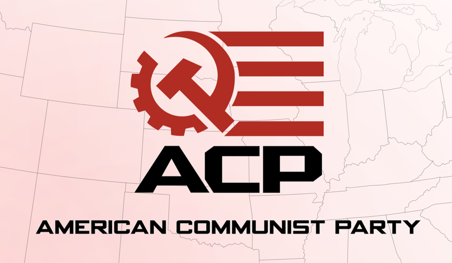
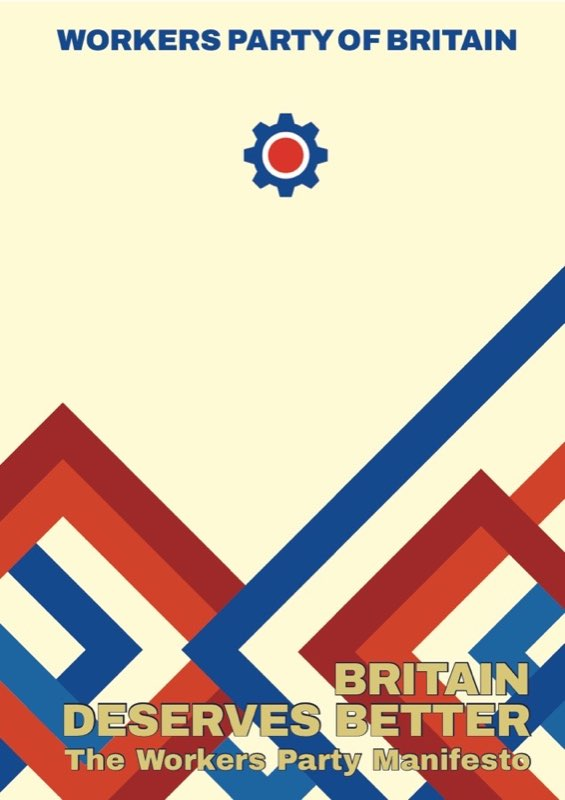
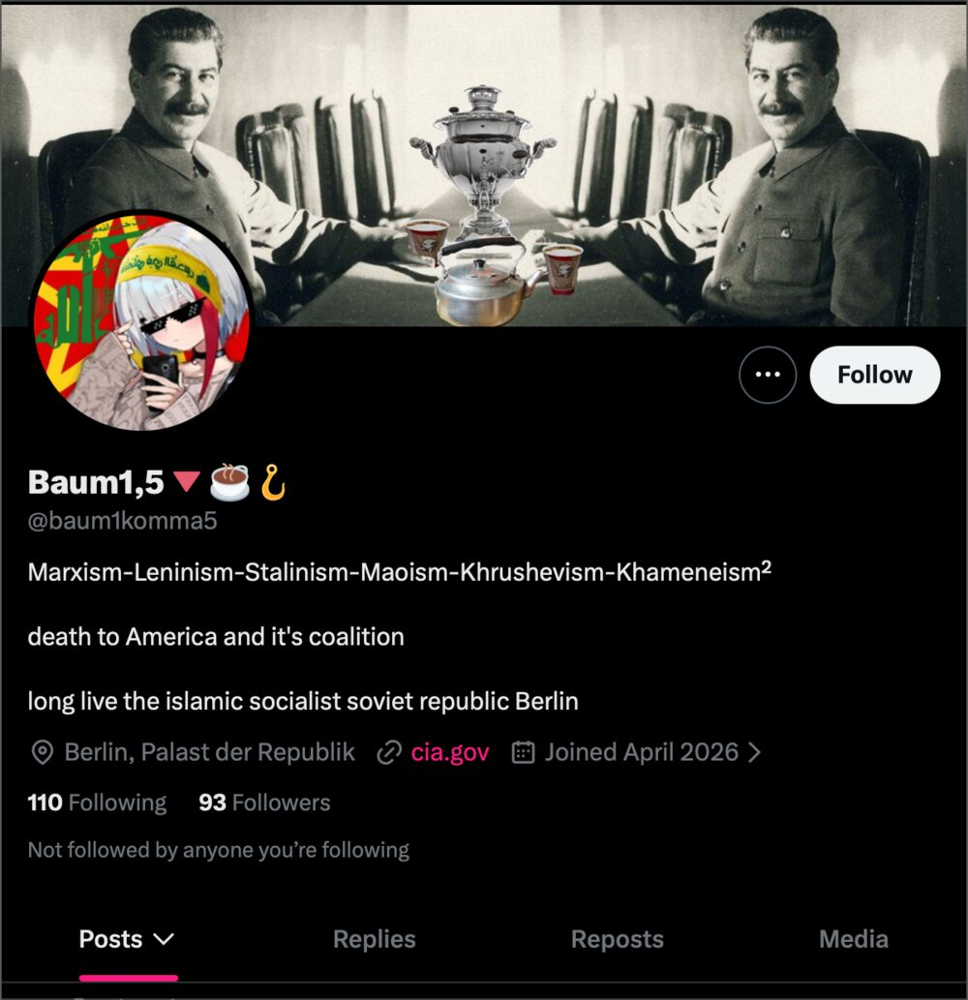
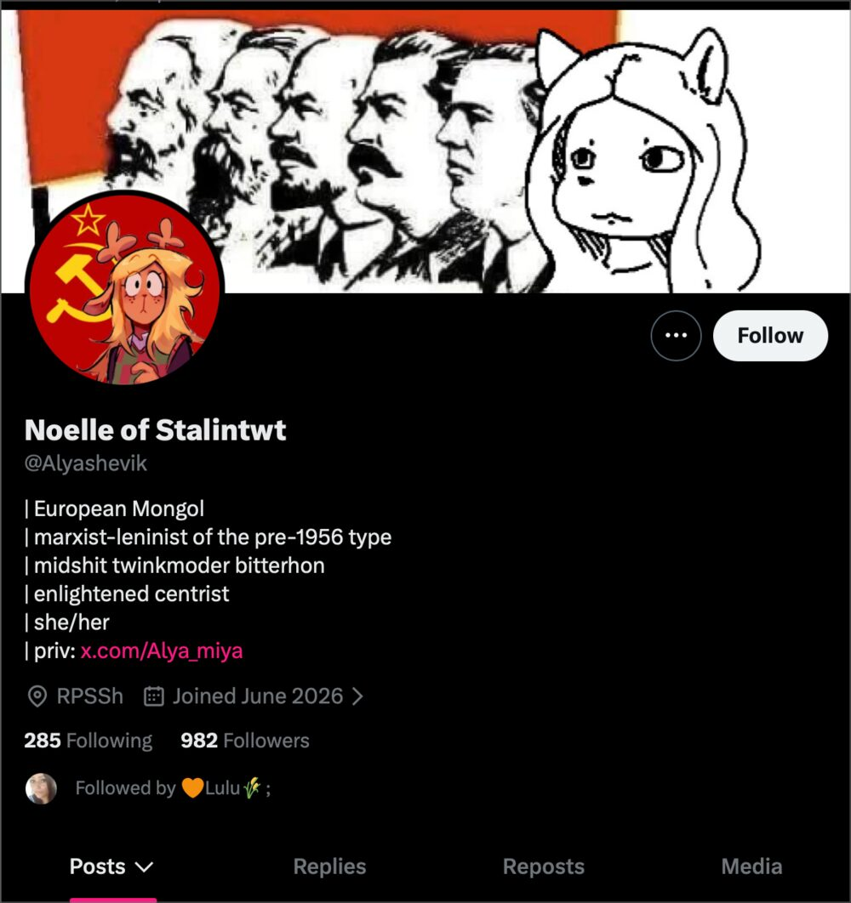
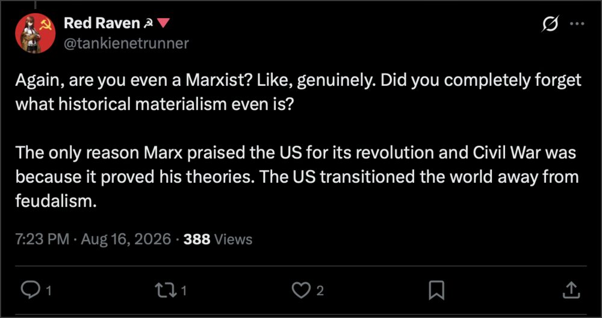
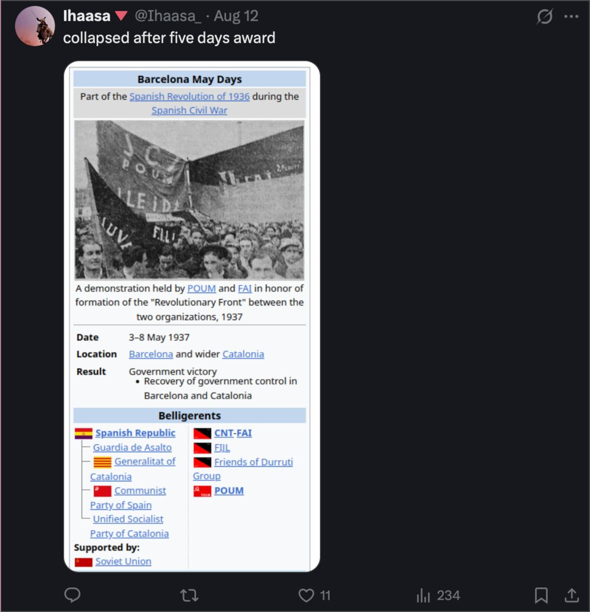

1 · Property
Does it seek the abolition of private ownership of the means of production, or the better management of it?
ANNEX C // CLASSIFICATION OF LIVING CLAIMANTS // METHOD PUBLISHED, VERDICTS SHOWN
The four tests from Annex A applied, one at a time, to the organizations and accounts using the word today. No entry is filed on vibes, on aesthetics or on whose side an outlet is on in a given week. Where a test is genuinely contested, it is marked contested and both answers are entered — including the subject's own.
Every entry below is scored against the same four tests, and nothing else. They are not this archive's invention — they are what the Comintern's Twenty-One Conditions enforced with expulsions in 1920, restated in Annex A:
Does it seek the abolition of private ownership of the means of production, or the better management of it?
Is class the primary division through which everything else is read, or one axis among several?
Is capitalism to be replaced, or administered more humanely? Is there a maximum program at all?
Is the unit of solidarity the class across every border? This is the test August 1914 destroyed the Second International over, and the test that created the word "communist" as a separate identity.
Two standing rules, applied to everyone without exception. Self-description is not evidence — the DSA calling itself socialist and a streamer calling himself a communist are claims, not classifications. And commentary is not organization: an audience is not a class, a subscriber count is not a membership, and a media operation is a media operation whichever flag is in the banner. That second rule is applied below to outlets this archive is otherwise sympathetic to, because a test you only run on your opponents is not a test.

What it is. A party founded in July 2024 out of a split with the Communist Party USA, with Haz Al-Din (Adam Tahir) as executive chairman and Jackson Hinkle among its founders. Its founding declaration is primarily a schism document: it charges the CPUSA leadership with suppressing internal debate, substituting "eclectic seminars given from the liberal perspective" for Marxist education, and — the operative charge — aligning the party with the Democratic Party. On the Annex A reading, that last accusation is the same charge the Third International brought against social democracy in 1919, brought a century later against a party that kept the name.
Property, class, rupture — pass. The ACP claims a Marxist-Leninist program, a maximum program, and a party form rather than a pressure group inside another party's primaries. Whatever else is disputed about it, it does not fail the way the entries in §04 fail: it is not asking for capitalism to be administered more kindly, and it is not organising as a caucus of the Democratic Party. On the archive's instrument, that is three tests cleared — which is three more than most American organizations using the word.
Internationalism — contested, and this is the real argument. The declaration holds that "the development of the American nation has objectively entered into contradiction with the form of the United States of America itself," and the current the ACP grew out of is publicly identified with "MAGA communism" — a strategy of winning the patriotic working-class base that right-wing populism currently holds. August 1914 is precisely the test that framing runs into, and this archive will not pretend otherwise.
The defence, in its own tradition's terms. Lenin's position on the national question is not a footnote to Marxism but a load-bearing part of it: the right of nations to self-determination, the distinction between the patriotism of an oppressor nation and the national liberation of an oppressed one, and the Comintern's anti-imperialist united front, which instructed communists to work inside mass national movements rather than purify themselves out of them. Stalin's Marxism and the National Question is the canonical text. On that reading, going where the working class actually is — including where it is currently reactionary — is Leninism doing exactly what it was built to do, and the alternative is the purity that has kept the American communist left at zero for fifty years.
The prosecution, in the same tradition's terms. The Twenty-One Conditions were written to expel social-patriots specifically — the socialists who discovered a national interest in 1914 and voted the war credits. Critics on the Marxist-Leninist left, including in a widely circulated 2025 autopsy in geese magazine, argue the formation functions as a personality vehicle rather than a cadre organization, and that "meeting the base where it is" has historically been the mechanism by which parties end up carrying their ruling class's flag rather than converting its base. The archive does not adjudicate this. It files the test as contested and records that the tradition's own foundational crisis was about exactly this question — see Schism №4.
Filed: a communist party on program, on the archive's instrument, with the internationalism test unresolved and the organization too young — founded 2024 — for a record to exist. Verdicts about what it becomes belong to whoever writes the next edition.

What it is. Founded by George Galloway in December 2019, with Chris Williamson, Peter Ford and Andy Hudd as deputy leaders. Its manifesto, Britain Deserves Better (February 2024), opens with a sentence that saves the archive a paragraph of analysis: "The Workers Party of Britain is a socialist party but we are not utopian, nor are we bound by abstruse theory." It is the only entry in this register that states its own distance from theory as a credential.
Class — pass. Class is the organising axis of the entire document, not one concern among several. The manifesto commits to "the redistribution of wealth and power in favour of working people," to workers on boards with veto and report-back powers after the model of the shelved Bullock Report of 1977, and to trade union independence. Its position on Labour is the sharpest in British politics and lands exactly where Annex A puts social democracy: "the greatest block to working class aspirations is not the Conservative Party but the Labour Party itself… a wolf in sheep's clothing." A party that names the reformist party as the primary obstacle has understood the 1919 schism, whatever else it has.
Internationalism — pass. A NATO referendum with the party campaigning to leave, a "thoroughgoing review" of defence and foreign policy, and unequivocal support for Palestine with a call for "a single state in which all those born in Palestine-Israel can live in peace with equal rights." That is anti-imperialism as programme rather than as posture, and it is the plank that separates the WPB from every other party with seats in Britain.
Property — partial. The programme is selective nationalisation: utilities, Railtrack, the electricity grid, the water companies, the pharmaceuticals industry, with the military-industrial complex, food logistics, ports and airports listed for consideration. Full renationalisation of the NHS. A wealth tax on estates over £10m and the removal of tax from the first £21,200 of wages. But the same document commits to "recognising the reasonable rights of private producers, manufacturers and productive businesses." That is the commanding heights, not the abolition of private ownership of the means of production.
Rupture — partial, and this is the honest verdict. The manifesto is explicit that capitalism is not going to be replaced overnight, that "it may take many years to transform Britain into a secure democratic socialist state," and that the road is electoral. By the instrument published above, that is the parliamentary road with a maximum programme deferred rather than abandoned — nearer to the left of social democracy than to the files upstairs. Filed as a socialist workers' party, not a communist one, which is what it calls itself and is therefore no accusation.
The distinction from §04 matters and the archive draws it plainly. The DSA organises inside the party it should be fighting; the WPB was built to run candidates against it, refuses NATO, and takes the position on Palestine that costs it coverage. On the register's own scoring it is the strongest electoral formation in Britain claiming the working class, and it is still not, by its own description, a communist party.
The following are filed as publications, not organizations — the same distinction the archive applies to the streamer left in §04, applied here to outlets whose line it is otherwise documenting favourably. This is not a demotion; it is the accurate category. A newspaper was always a weapon in this tradition — Iskra was a newspaper, and Lenin argued that building one was how a party gets built. But a paper is a paper until an organization stands behind it.
RTSG — rtsg.org, @RTSG_Main, @RTSG_News. A Marxist–Leninist publishing and news collective: written analysis, a podcast (The Moment), and a daily news operation covering communist parties and movements internationally. Editorially it holds the orthodox line on the twentieth century — the position FILE 17 and FILE 10 would recognise, against the revisionist and Eurocommunist readings in FILE 19. On the four tests its published line passes on property, class and rupture, and holds internationalism explicitly. Filed as media: the archive documents the line, and does not audit daily output.
Haz Al-Din — @InfraHaz, of Infrared. Streamer and commentator; executive chairman of the ACP since 2024, which is where the organizational entry above belongs. As an account, it is filed under the same rule as every other broadcaster in this register: the party is the organization, the stream is the paper. The archive notes without comment that this is the reverse of the usual American sequence, in which the audience never becomes anything.
Readers who want the tradition's own primary sources rather than any contemporary outlet's reading of them should start with the twenty files and the documents each one cites.
These entries fail the instrument, and in each case the failure is documentary rather than a matter of opinion — usually attested by the subject's own founding papers.
The DSA — fails 1, 3 and 4. Founded in 1982 by Michael Harrington, an explicitly anti-communist democratic socialist, on a strategy of realignment inside the Democratic Party. Big-tent membership organization rather than a party; belongs to no communist international; claims no communist program. By its own charter this is social democracy — the tendency communism formally excommunicated in 1919. A classification, not an insult: social democracy has its own file, its own martyrs and its own dead.
The streamer left — fails on category before program. The largest left broadcasters mostly self-describe as socialists rather than communists, so the false-advertising charge is weaker than advertised. The classification stands regardless: commentary is not organization, an audience is not a class, and dissent delivered through a platform's subscription machinery is Debord's recuperation at industrial scale. The defence — mass political education reaching people no party paper ever will — is the argument every school upstairs made for its own press, and the archive files it.
The largest of them — Hasan Piker, @hasanthehun — is the useful case precisely because the false-advertising charge does not stick: he describes himself as a socialist, not a communist, and the register does not fault an entry for a claim it never made. What the instrument records is the shape of the thing. The circled A on the shirt belongs to the lineage in FILE 03, the politics delivered is broadly social-democratic, and the vehicle is a subscription business whose owner owns his own means of production — which is a real answer to test 1, and not the one the shirt implies. Commentary is not organization. The archive files the entry as media, as it files every outlet in §03 above, including the ones it agrees with.
The progressive NGO layer — fails 1, 2 and 3. Foundation-funded, staffed from the professional-managerial class, structurally dependent on the donors whose fortunes are the thing in question. Annex A §04 assembles the Marxist critique in full: a framework in which a perfectly diverse ruling class would be a just one asks nothing of property at all.
The aesthetic — fails all four, and is the largest formation by headcount. Red stars, Soviet fonts (this archive pleads guilty), hammer-and-sickle avatars, "comrade" as a register. The symbols are free; the program is a property claim. The files upstairs contain purges, famines and civil wars. They do not contain a single school founded on a look.
The specimens below are filed for method rather than for mockery — they are simply what the instrument returns when it is run on the formation that supplies most of the word's daily usage. A bio reading "Marxism-Leninism-Stalinism-Maoism-Khrushevism-Khameneism" holds positions the tradition expelled each other over: Khrushchev's 1956 secret speech and the refusal of it are the whole reason FILE 17 exists, and no cadre in either camp could have signed both. That is only possible when none of the words are load-bearing. Test 1 asks about ownership of the means of production; a banner image answers nothing. Test 2 asks whether class is the primary division; a follower count is not a class. Test 3 asks for a maximum program; a display name is not one. Test 4 asks who the unit of solidarity is; a row of flag emoji is a subscription to a mood.



The defence, entered as it is everywhere else in this register. Every school upstairs recruited through its look before it recruited through its program — the posters in the plate room were made for exactly that, and this archive's own typography is an entry in the same charge sheet. Symbols are how a tradition survives the decades in which it has no organization, and some fraction of any avatar cohort reads its way into the files. What the instrument declines to concede is the conflation: an aesthetic is a recruiting poster for a movement, and a recruiting poster with no movement behind it is Debord's recuperation with the labour done voluntarily.
The anarchists — not scored here, because they are a different lineage and largely say so. This is the entry the register is most often asked for, and the answer is a classification rather than a verdict. Anarcho-communism (FILE 03) passes test 1 outright — Kropotkin's common storehouse is a harder property claim than most parties ever made — and it does not fail tests 2, 3 or 4 so much as reject the machinery those tests were written to enforce: the party, the transitional state, the international with a centre. Marx settled the procedural question at The Hague in 1872 by expelling Bakunin, and the two currents have run parallel and unreconciled ever since (Schism №1). So: not communists in the sense this register uses the word, which is the Comintern's sense — and not applicants either.
The modern online formation is a separate matter, and it fails the same way the aesthetic fails. A bio carrying Makhnovite, especifist, democratic confederalist, Bookchin and Chomsky at once is holding four incompatible answers to the only question anarchism has ever had to answer — what organization, if not the party — while the red flag and the black flag fly in the same header, which is the one arrangement 1872, 1921 and 1937 each ruled out in blood.
The joke the two lineages tell about each other is on file, and so is the answer. Marxists circulate the Barcelona May Days — 3–8 May 1937, the one week the CNT-FAI and POUM held a city against a state that included their own side — under the caption collapsed after five days. The anarchist reply is the stronger half of the exchange: what collapsed in five days was street fighting against a Republic whose Soviet-supplied Communist Party then spent a year dismantling collectives that had been running Catalonia's industry since July 1936, which is Bakunin's 1873 prediction arriving on schedule. Both halves are the same documented event, and the archive files both.

On living subjects. Every claim above is sourced to a founding document, a public self-description, or an attributed criticism, and is marked as such. Where the tradition is split, the split is shown rather than resolved. Nothing here is a claim about anyone's sincerity.
On the archive's own bias. This annex classifies by the tradition's historical instrument rather than by a neutral one, because there is no neutral definition of a word whose entire history is a fight over who may use it. The instrument is published above so that a reader who rejects a verdict can see precisely which test produced it and argue with the test.
On revision. Organizations change and accounts change hands. Entries here describe positions on the record as of writing, not permanent character. The ledger of the last century is in Annex B; this one is about the living, and the living get to move.